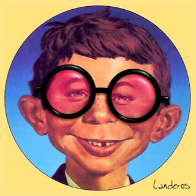

Those crazy cockeyed optimists!
Optimists see the glass as half full. Pessimists see it as half empty. The problem is that the glass is just too damn big.
- - - - - - - - - -
by Rob Landeros
Three things you'll never hear a person say in public:
- "I was wrong."
- "I don't know."
- "I'm not optimistic."
The first two are about retaining pride and not appearing foolish. The third is about being politic by telling people what they want to hear. Nobody wants to hear the truth, especially if it's a downer.
These phony optimists are either lying to themselves or lying to you when they tell you that they believe that things will get better. It doesn't matter what the actual facts are. Some of them actually believe the bullshit they are handing out, based on nothing but their "positive attitude".
When have things ever gotten better? Never, that's when! So there is no reason to believe they will start any time soon. Ever since the first amino acid and complex protein slithered out of the primordial soup, every thing that has ever lived procreated, or tried to, then made a beeline to oblivion. Nothing ever got out of this world alive.
The ultimate optimistic outlook is believing that you will live after you die. So just when things are the absolute worst, they tell you it's better.
People confuse optimism with hope - wishful thinking with a positive outlook.
A more realistic philosophy is expressed by the old Jewish saying, "Hope for the best but expect the worst." By the way, I'm probably wrong. I don't know what I'm talking about and I'm very pessimistic about the whole thing. Now, wasn't that refreshing?

|